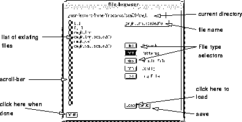

SNNS supports five types of files, the most important ones are:
The first thing you are likely to use is the option in the
manager panel to read network and pattern definition files. The window
that will appear is given in figure  .
.

The top text field shows the current directory. The main field shows all files for each of the file types that SNNS can read/write. Directories are marked by square brackets. To load an example network change the directory by entering the example directory path in the top field (do not press return):
SNNSv4.1/examples
Changes will only be apparent after one of the file selectors has been
touched:click on  and then
and then  again. You should now
see a list of all network definition files currently available.
Double-clicking on one of the filenames, say 'letters' will copy the
network name into the file name window. To load the network simply
click on . You can also enter the filename directly into the
file name window (top left).
again. You should now
see a list of all network definition files currently available.
Double-clicking on one of the filenames, say 'letters' will copy the
network name into the file name window. To load the network simply
click on . You can also enter the filename directly into the
file name window (top left).